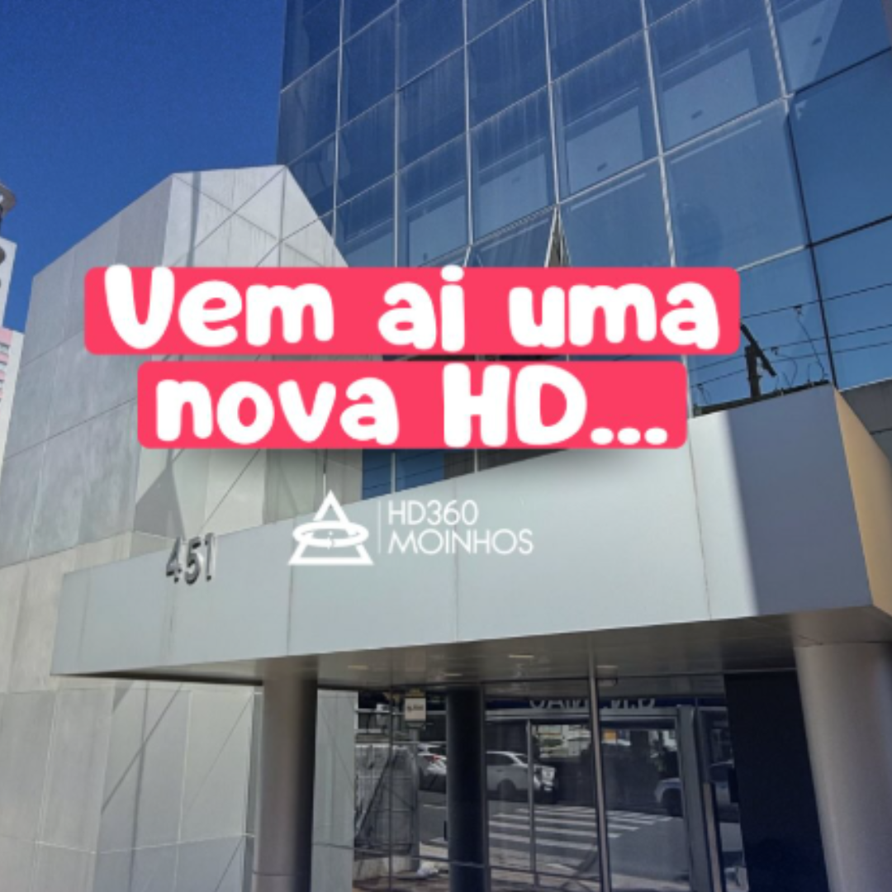

Histórias HD360
Histórias HD360
17 de setembro de 2024
Nos últimos anos, o número de diagnósticos de autismo tem aumentado significativamente. Isso torna ainda mais importante contar com uma clínica de autismo em Porto Alegre que ofereça tratamento especializado. O acompanhamento correto desde cedo é essencial para o desenvolvimento de crianças e adolescentes com TEA (Transtorno do Espectro Autista), garantindo que recebam a atenção que precisam para evoluir em todas as áreas da vida.
Encontrar uma clínica de autismo em Porto Alegre com profissionais qualificados faz toda a diferença. A abordagem terapêutica precisa ser personalizada e multidisciplinar, com tratamentos como a Análise do Comportamento Aplicada (ABA), terapia ocupacional e fonoaudiologia, adaptados às necessidades de cada paciente. Um tratamento completo, focado no desenvolvimento das habilidades, traz melhores resultados e mais qualidade de vida.
É nesse cenário que a HD 360 Moinhos se destaca, oferecendo duas unidades em Porto Alegre preparadas para atender crianças e adolescentes com autismo. A clínica conta com uma equipe especializada e um ambiente pensado para acolher as famílias, garantindo segurança e conforto durante o tratamento. A estrutura das unidades permite o uso de recursos adequados para as terapias, maximizando os benefícios para cada paciente.
O compromisso da HD 360 Moinhos é oferecer o melhor cuidado para cada pessoa com autismo, respeitando seu ritmo e potencial. Com profissionais experientes e dedicados, a clínica se preocupa com o acompanhamento contínuo, proporcionando um atendimento humanizado e completo. Se você busca uma clínica de autismo em Porto Alegre que entende as necessidades do seu filho, a HD 360 Moinhos está pronta para ajudar.
1. O que é o Transtorno do Espectro Autista (TEA)?
O Transtorno do Espectro Autista (TEA) é uma condição que afeta o desenvolvimento da pessoa, principalmente nas áreas de comunicação, comportamento e interação social. Cada indivíduo com TEA é único, por isso é importante que o tratamento seja feito em uma clínica de autismo em Porto Alegre que entenda as particularidades de cada caso. O autismo pode se manifestar de forma leve ou mais intensa, impactando desde a maneira como a pessoa se comunica até como ela lida com situações do dia a dia.
Quem tem autismo pode ter dificuldade para interagir com outras pessoas, apresentar comportamentos repetitivos e ter interesse restrito em certos temas ou atividades. Esses desafios podem ser trabalhados com o acompanhamento correto, e é por isso que uma clínica de autismo em Porto Alegre faz toda a diferença. O foco é ajudar no desenvolvimento dessas habilidades, melhorando a comunicação e a autonomia.
O diagnóstico precoce é fundamental, pois quanto mais cedo a intervenção começar, maiores são as chances de evolução. Uma clínica de autismo em Porto Alegre como a HD 360 Moinhos oferece profissionais preparados para identificar os sinais de TEA e iniciar um tratamento personalizado. Isso pode incluir terapias como ABA, fonoaudiologia e terapia ocupacional, tudo voltado para o crescimento e bem-estar da pessoa autista.
Cada criança com TEA tem seu próprio ritmo de desenvolvimento, e a HD 360 Moinhos trabalha para respeitar essas diferenças. Com o diagnóstico e o tratamento corretos, as pessoas com autismo podem alcançar uma vida mais independente e plena. Por isso, contar com uma clínica de autismo em Porto Alegre comprometida com esse processo é essencial para o futuro de quem tem TEA.
2. Nossa Abordagem no Tratamento do Autismo
E Na HD 360 Moinhos, a abordagem no tratamento do autismo é feita de maneira personalizada, sempre levando em conta as necessidades individuais de cada paciente. Entre as principais terapias oferecidas está a ABA (Análise do Comportamento Aplicada), uma técnica amplamente reconhecida por trabalhar o desenvolvimento de habilidades sociais, comunicação e comportamento. Além disso, a clínica conta com fonoaudiologia para melhorar as capacidades de fala e linguagem, e terapia ocupacional para ajudar no desenvolvimento motor e nas atividades do cotidiano.
Cada tratamento é pensado de forma integrada, com a participação de um time multidisciplinar altamente qualificado. Esse time é composto por especialistas de diferentes áreas, que trabalham em conjunto para garantir o melhor cuidado para as pessoas com TEA. A união dessas diferentes especialidades faz com que o tratamento seja mais completo e eficaz, promovendo o desenvolvimento global do paciente.
Além da ABA, fonoaudiologia e terapia ocupacional, a HD 360 Moinhos oferece outras terapias especializadas, como psicologia e integração sensorial, todas voltadas para o desenvolvimento das habilidades de cada criança e adolescente com autismo. Cada plano de tratamento é montado com base em avaliações individuais, sempre respeitando o ritmo e as particularidades de cada paciente.
O grande diferencial da HD 360 Moinhos é o comprometimento em proporcionar um ambiente acolhedor e terapias de ponta, sempre com foco na evolução constante de quem possui TEA. Com uma equipe dedicada e um planejamento terapêutico ajustado às necessidades específicas, a clínica garante o suporte ideal para cada etapa do desenvolvimento.
3. Conheça a Clínica de Autismo HD 360 Moinhos em Porto Alegre
A HD 360 Moinhos é uma clínica especializada no tratamento do autismo, com duas unidades em Porto Alegre, localizadas em bairros estratégicos para facilitar o acesso das famílias. As unidades estão posicionadas de maneira a garantir conveniência, permitindo que pais e responsáveis encontrem um local próximo de casa ou do trabalho, facilitando a rotina de acompanhamento terapêutico das crianças e adolescentes com TEA.
A clínica se destaca por oferecer um ambiente totalmente acolhedor, pensado para atender às necessidades específicas das pessoas com autismo. Com espaços cuidadosamente planejados, como salas sensoriais, as crianças podem trabalhar estímulos que ajudam no desenvolvimento de suas habilidades de maneira segura e eficaz. Além disso, as áreas para atividades terapêuticas são equipadas com materiais especializados, garantindo que cada sessão tenha os recursos necessários para alcançar os melhores resultados.
Na HD 360 Moinhos, cada detalhe foi criado para proporcionar um ambiente que valoriza o bem-estar e o desenvolvimento das pessoas com autismo. A combinação de um time especializado com um espaço estruturado para atender às particularidades de cada paciente faz com que a clínica seja uma referência em Porto Alegre.
4. Nosso Compromisso com o Desenvolvimento Individual
Na clínica de autismo em Porto Alegre, HD 360 Moinhos, o tratamento é sempre adaptado às necessidades de cada paciente. Sabemos que cada pessoa com autismo tem suas próprias características e desafios, por isso personalizamos as terapias para que elas atendam as demandas específicas de cada criança ou adolescente. Acompanhamos de perto a evolução de cada um, ajustando o plano terapêutico conforme necessário para garantir que eles alcancem seu máximo potencial.
Esse cuidado e atenção fazem a diferença no desenvolvimento das habilidades das crianças e adolescentes com TEA. Muitos pais compartilham suas experiências positivas com a clínica de autismo em Porto Alegre. A mãe do Lucas, de 8 anos, conta: “A equipe da HD 360 Moinhos sempre nos deixou seguros sobre o tratamento. Vimos grandes avanços na interação e nas atividades diárias do Lucas. Estamos muito felizes com os resultados.”
Outro depoimento vem do pai da Mariana, de 5 anos: “Na HD 360 Moinhos, encontramos o cuidado e atenção que buscávamos. A equipe está sempre atenta às necessidades da minha filha e ela vem evoluindo de maneira incrível.” Essas histórias mostram como o trabalho personalizado da clínica transforma a vida das famílias.
A clínica de autismo em Porto Alegre HD 360 Moinhos se orgulha de oferecer um tratamento individualizado, focado no progresso contínuo e na melhoria da qualidade de vida das pessoas com autismo. Nosso compromisso é com cada criança, acompanhando e ajustando as terapias para que cada paciente alcance seu melhor.
5. Como Agendar uma Avaliação na HD 360 Moinhos?
Agendar uma avaliação na clínica de autismo em Porto Alegre, HD 360 Moinhos, é simples e pode ser feito de várias formas. Quer você prefira ligar para uma das nossas unidades, visitar-nos pessoalmente ou usar o nosso site, estamos prontos para ajudar e garantir que você receba todas as informações necessárias.
Para marcar sua avaliação por telefone, você pode ligar para uma das nossas unidades: Unidade Casemiro, localizada na Rua Casemiro de Abreu, 448, no bairro Moinhos de Vento, Porto Alegre, com o telefone (51) 2112-8884. Ou entre em contato com a Unidade Mariante, que fica na Rua Mariante, 428, no bairro Rio Branco, Porto Alegre, pelo telefone (51) 3517-0504.
Se preferir agendar online, visite nosso site oficial em www.hd360.com.br. Lá, você encontrará um formulário de contato fácil de preencher. Após o envio, nossa equipe entrará em contato para confirmar o agendamento e esclarecer qualquer dúvida que você possa ter.
Para quem prefere o atendimento presencial, nossas unidades estão abertas para receber você e responder todas as suas perguntas. A equipe da clínica de autismo em Porto Alegre HD 360 Moinhos está sempre à disposição para fornecer o suporte necessário e garantir um início tranquilo no tratamento.
Conclusão
Na HD 360 Moinhos, nosso compromisso é oferecer o melhor tratamento para pessoas com autismo em Porto Alegre. Com uma abordagem personalizada e uma equipe multidisciplinar altamente qualificada, estamos dedicados a apoiar o desenvolvimento e o bem-estar de cada paciente. Nossas unidades estão preparadas para fornecer um atendimento acolhedor e eficaz, com todas as ferramentas necessárias para um tratamento de qualidade.
Nós entendemos que cada pessoa com TEA tem necessidades únicas, e é por isso que ajustamos nossas terapias para atender essas particularidades de forma individualizada. Seja através da ABA, fonoaudiologia, terapia ocupacional ou outras especialidades, estamos aqui para garantir que cada passo do processo seja realizado com o máximo cuidado e atenção.
Não perca a oportunidade de começar um tratamento especializado e eficaz. Entre em contato com uma das nossas unidades e agende uma avaliação para iniciar o acompanhamento que fará a diferença na vida de quem você ama. Ligue para a Unidade Casemiro no (51) 2112-8884 ou para a Unidade Mariante no (51) 3517-0504. Você também pode agendar pelo nosso site www.hd360.com.br.
Estamos prontos para ajudar e esperamos poder contar com sua visita. Entre em contato hoje mesmo e dê o primeiro passo para um futuro melhor com o suporte da clínica de autismo em Porto Alegre HD 360 Moinhos.
Leia também